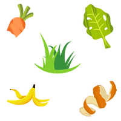
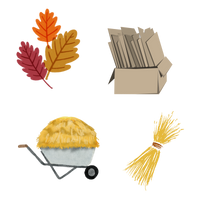

All About Composting
All About Composting
Composting is a wonderful way to help reduce food waste and create great gardening soil for your own family.
Food that ends up in landfills undergoes anaerobic decomposition, which means it just rots in the absence of oxygen. Instead of turning into valuable organic material, it emanates methane, a greenhouse gas which contributes to global warming. If we compost our kitchen scraps and garden waste, not only we keep these materials out of landfills, but we can also use them with great benefit for ourselves!
Compost is an amazing fertilizer for your garden. It saves you time and money: you don't have to buy expensive synthetic fertilizers or spend hours making your own. By adding a balanced amount of "brown" and "green" materials to your pile, you let nature do the rest of the work.
| Green Materials | Brown Materials |
|---|---|
| fruit peel | leaves |
| coffee grounds | shredded cardboard |
| fresh grass | dry grass |
| vegetable scraps | hay |
| egg shells | newspapers |
|  |  |

Tips
Add 3 parts "brown"-1 part "green".
"Brown" materials are rich in carbon, while "green" materials contain more nitrogen. Add approximately 1 part of "greens" to each 3-4 parts of "browns" for effective decomposition.
Add water.
It's best when your pile contains about as much water as a wrung-out sponge. Water your pile if you see it drying out in the hot summer months.
Air the pile.
Turn the pile to ensure air circulation and to prevent clumping.